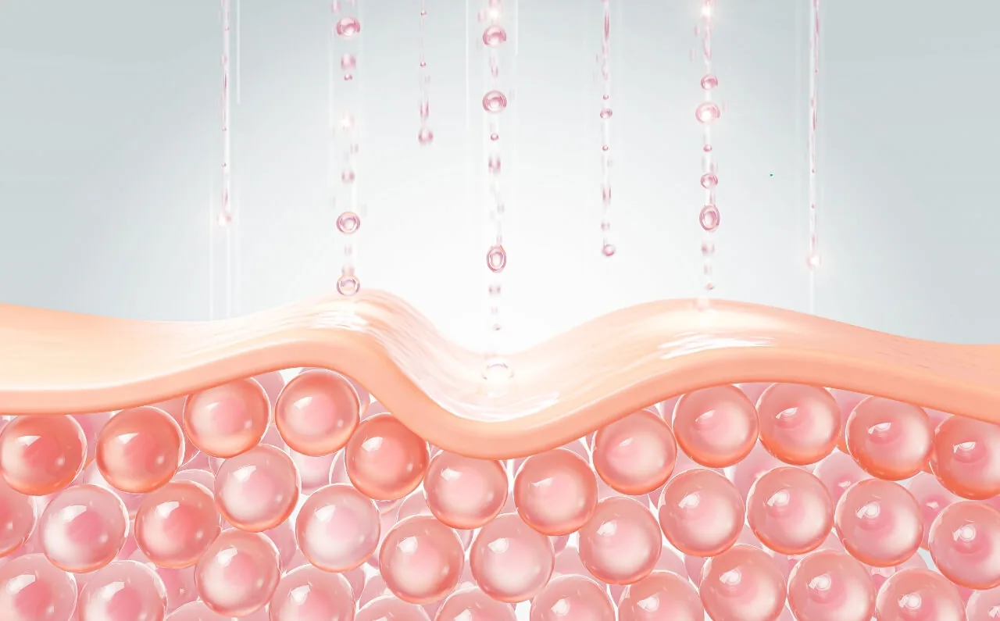
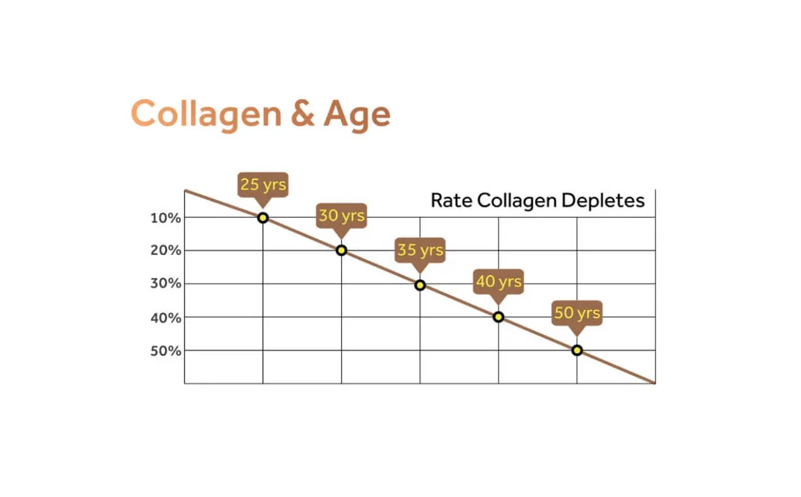
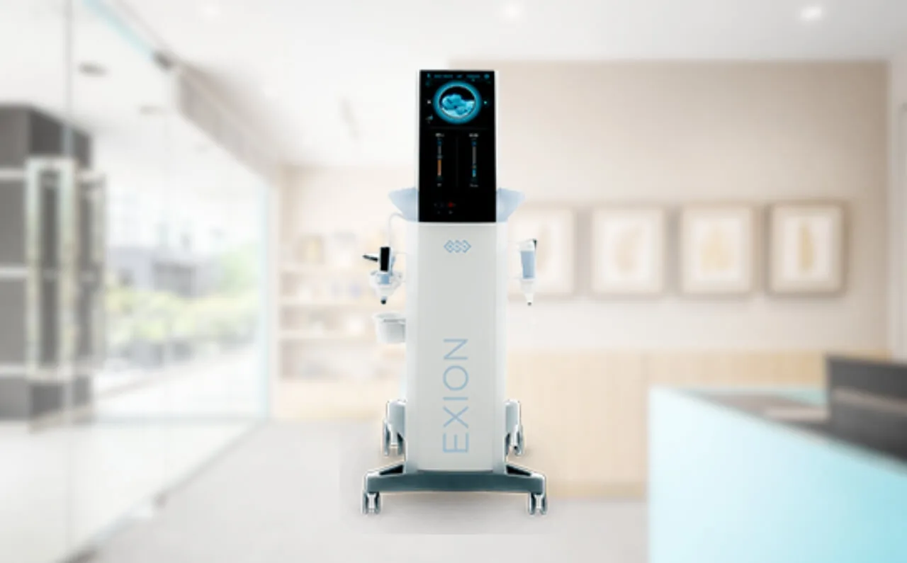

Collagen—the unsung hero of youthful, radiant skin—is the very foundation of our skin’s strength and elasticity. This vital protein plays a crucial role in maintaining firmness, hydration, and a smooth complexion. However, as we age, collagen production begins to decline, leading to visible signs of ageing such as fine lines, wrinkles, and sagging skin.
With today’s fast-paced lifestyles and environmental stressors, keeping our skin healthy has never been more challenging. But what if there was a way to naturally stimulate collagen production and restore your skin’s vitality?
Introducing BTL Exion—a treatment that harnesses the power of advanced technology to stimulate collagen from within. Safe, non-invasive, and highly effective, BTL Exion is setting a new standard in skincare.
In this blog, we’ll delve into why collagen matters more than ever and how BTL Exion can help you achieve a more youthful, glowing appearance—naturally.
What Is Collagen and Why Does It Matter?

Ever wondered why collagen is the cornerstone of youthful skin? This diagram breaks down the layers of the skin and reveals how collagen supports structure, firmness, and elasticity.
Collagen is a natural protein that serves as the building block of your skin, hair, nails, and connective tissues. Often referred to as the “scaffolding” of the skin, collagen provides structure, elasticity, and strength, ensuring your skin remains firm and smooth.
In our younger years, our bodies produce abundant collagen, resulting in plump, youthful-looking skin. However, as we age, this production slows down—by about 1% per year after the age of 20. The result? Fine lines, wrinkles, and a gradual loss of skin elasticity and volume.
But collagen isn’t just about appearance. It also plays a vital role in hydration and skin repair. When collagen levels are optimal, your skin looks vibrant and healthy and feels resilient against environmental damage. This is why maintaining or boosting collagen is essential, not only for cosmetic reasons but also for overall skin health.
The Science Behind Collagen Decline

As we age, collagen production slows, leading to visible signs of aging such as fine lines, wrinkles, and skin laxity. Understanding this process is the first step to maintaining youthful, healthy skin.
Collagen decline is a natural part of ageing, but various internal and external factors often accelerate its effects. Understanding why this happens can help us take proactive steps to slow down the process and maintain healthy, youthful skin.
From around our mid-20s, the body’s ability to produce collagen begins to wane. Each passing year sees a gradual reduction in collagen synthesis, while the quality of the collagen produced also deteriorates. This decline results in visible signs of ageing, such as wrinkles, fine lines, and sagging skin.
But it’s not just age that affects collagen. External factors can significantly speed up its depletion:
- Sun Exposure: Ultraviolet (UV) rays penetrate the skin and damage collagen fibres, leading to premature ageing.
- Poor Diet: A diet lacking in nutrients like vitamin C, zinc, and amino acids can hinder the body’s collagen production.
- Lifestyle Choices: Smoking and excessive alcohol consumption impair the skin’s ability to produce and maintain collagen.
- Environmental Stressors: Pollution and free radicals accelerate oxidative stress, breaking down collagen and reducing skin elasticity.
Modern stressors, such as a lack of sleep and chronic stress, can also impact the skin’s ability to regenerate and produce collagen. Combined, these factors create a perfect storm, leaving skin vulnerable to ageing more quickly than it should.
Fortunately, advancements in aesthetic technology, such as BTL Exion, offer a solution to counteract collagen decline.
BTL Exion: An Approach to Natural Collagen Stimulation

BTL Exion: Harnessing advanced technology to naturally stimulate collagen, promoting smoother, firmer, and more youthful skin.
As the skin’s collagen production slows down with age, finding safe and effective ways to revitalise it becomes crucial. Enter BTL Exion—an advanced aesthetic technology that revolutionises how we address collagen depletion.
BTL Exion combines three innovative elements: monopolar radiofrequency, ultrasound technology, and artificial intelligence (AI). Together, these technologies work harmoniously to stimulate natural collagen production deep within the skin.
Here’s how it works:
- Monopolar Radiofrequency: This energy penetrates the skin’s deeper layers, gently heating the tissues to stimulatethe production of collagen and elastin. The controlled heat tightens existing collagen fibres while triggering the body’s natural healing response to produce new ones.
- Ultrasound Technology: Ultrasound waves are used to deliver precise energy to targeted areas, ensuring treatment is safe and highly effective. This enhances skin tightening and improves overall texture.
- Artificial Intelligence (AI): AI-powered technology adapts treatment settings to suit your unique skin type and needs, ensuring optimal results with maximum comfort.
What sets BTL Exion apart is its ability to encourage the skin to rebuild itself naturally. Unlike invasive procedures, which may rely on external substances or require downtime, BTL Exion uses your body’s natural processes to rejuvenate and strengthen the skin from within.
The benefits of BTL Exion extend beyond collagen stimulation. This treatment can address multiple skin concerns, including fine lines, wrinkles, sagging, and uneven texture. Best of all, it offers visible improvements with minimal discomfort and no lengthy recovery time.
Benefits of Boosting Collagen with BTL Exion
The benefits of collagen extend far beyond youthful-looking skin—it is the cornerstone of elasticity, hydration, and overall skin health. By leveraging the power of BTL Exion, you can naturally enhance your collagen levels and enjoy a wide range of transformative results:
1. Improved Skin Firmness and Elasticity
Collagen is essential for maintaining the skin’s structure. With BTL Exion stimulating collagen production in the deeper layers of the skin, you’ll notice firmer, more resilient skin that bounces back with youthful elasticity.
2. Reduction in Fine Lines and Wrinkles
As collagen levels increase, the skin becomes smoother and more plump. Fine lines and wrinkles gradually fade, leaving you with a refreshed and rejuvenated appearance.
3. Enhanced Skin Texture and Hydration
Collagen not only improves skin elasticity but also plays a critical role in hydration. BTL Exion promotes healthier skin cells, resulting in a softer, smoother complexion with a radiant glow.
4. Natural and Non-Invasive Results
Unlike invasive procedures, BTL Exion stimulates your body’s natural collagen production, delivering gradual yet noticeable improvements. This means no harsh chemicals or substances—just a safe and gentle process with results you can trust.
5. Minimal Downtime, Maximum Effectiveness
One of the standout advantages of BTL Exion is its convenience. With minimal discomfort and no significant recovery period, you can easily fit the treatment into your busy schedule while still achieving long-lasting results.
6. Addresses Multiple Skin Concerns
Whether it’s sagging skin, uneven texture, or early signs of ageing, BTL Exion is a versatile treatment that effectively tackles a variety of skin issues. By boosting collagen, it improves the overall health and appearance of your skin.
BTL Exion allows you to age gracefully while enhancing your natural beauty. It’s a step towards healthier skin and greater confidence.
Why Choose Dr Abby Clinic for BTL Exion Treatments?

Discover the transformative power of BTL Exion at Dr Abby Clinic, where cutting-edge technology meets personalised care for youthful, radiant skin.
When it comes to advanced aesthetic treatments like BTL Exion, the expertise and care of your provider make all the difference. At Dr Abby Clinic, we are committed to delivering exceptional results in a professional, approachable, and trustworthy environment. Here’s why we stand out as your preferred choice:
1. Experienced Aesthetic Professionals
Our team is led by Dr Abby, a LPC-certified doctor with extensive experience in advanced skincare and aesthetic treatments. With in-depth knowledge of BTL Exion technology, Dr Abby ensure that each treatment is performed with precision and care.
2. Personalised Treatment Plans
No two individuals are alike, and neither are their skin concerns. At Dr Abby Clinic, we take the time to understand your unique needs and goals, tailoring every treatment to deliver the best possible results for you.
3. State-of-the-Art Technology
As a trusted provider of BTL Exion, we utilise the latest equipment and techniques to ensure safe and effective treatments. Our clinic stays up-to-date with cutting-edge advancements in the field of aesthetics.
4. Comfort and Care
Your comfort is our priority. From the moment you step into our clinic, you’ll be welcomed by a friendly and supportive team dedicated to making your experience as smooth and enjoyable as possible.
5. Proven Results
We pride ourselves on delivering treatments that work. Many of our clients have experienced transformative improvements in their skin’s appearance and texture, boosting their confidence and overall wellbeing.
6. Commitment to Safety and Excellence
At Dr Abby Clinic, we adhere to strict safety protocols and ethical practices. You can trust us to prioritise your health and satisfaction every step of the way.
Choosing Dr Abby Clinic means you’re embarking on a journey to rediscover your skin’s potential in the hands of experts who genuinely care.
Let us help you achieve the radiant, youthful skin you deserve with the revolutionary BTL Exion!
Your best skin is just a consultation away. Book your appointment today and experience the Dr Abby Clinic difference.